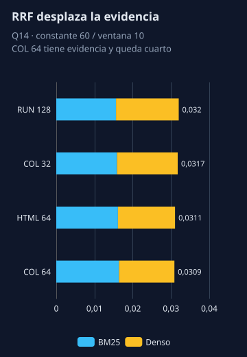
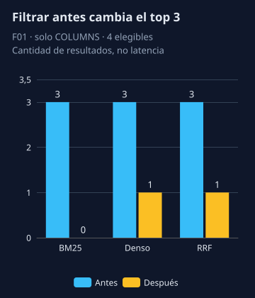
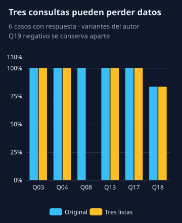
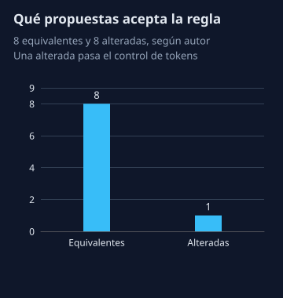
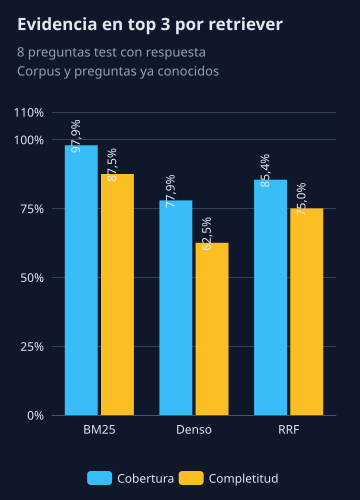

Recuperar evidencia
Tres documentos sintéticos conocidos, 13 chunks fijos y preguntas etiquetadas. Datos de una ejecución local guardada. El navegador no ejecuta un modelo ni envía consultas a un servicio.
Cargando resultados…
Qué evidencia devuelve cada señal
Hechos requeridos, alternativas y versión de fuente
Cobertura de cada hecho
Coseno de un par, a partir de vectores guardados
No es una probabilidad de respuesta correcta. Las 384 componentes pertenecen al perfil fijado y no tienen etiquetas humanas asignadas.
Fusión local de rankings guardados
La captura usa constante 60 y ventana 10. Cambiar estos controles solo recalcula RRF sobre las listas guardadas; no vuelve a ejecutar búsqueda ni valida otra configuración.
Desplaza la tabla horizontalmente para ver todos los aportes y verticalmente para recorrer todos los candidatos.
| Chunk | Rango BM25 | Rango denso | Aporte BM25 | Aporte denso | Suma |
|---|
Ranking fusionado y contribuciones completas

Elegibilidad antes o después del top k
Comparación sobre rankings exactos completos, con scores y estadísticas globales fijos. Muestra qué candidatos entran al top 3; no mide una ejecución nativa de prefilter en un motor ANN ni implementa permisos de acceso.

Varias formulaciones de una pregunta
Tres búsquedas BM25 guardadas por caso: original y dos paráfrasis redactadas por el autor. Las casillas fusionan subconjuntos de esas listas con RRF 60/10. No generan paráfrasis ni hacen nuevas llamadas de búsqueda.
Listas seleccionadas y procedencia

Conservar términos no prueba la intención
Propuestas redactadas antes de evaluar. Una regla comprueba tokens protegidos, sin un LLM. Los controles alterados sirven para comprobar sus límites; su etiqueta proviene del autor.
Original
Propuesta
Términos, decisión y consulta realmente usada

Resultados completos, incluidos los negativos
La tabla usa top 3, no cambia con los controles de otros paneles. Desarrollo y test ya eran conocidos; no es evaluación ciega. Cobertura por unidades de fuente, sin generación de respuestas.
| Conjunto | Método | Preguntas | Cobertura | Completitud |
|---|
Preguntas sin respuesta etiquetada
| Pregunta | Método | Devueltos | Cobertura |
|---|
